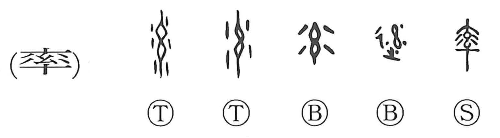

率

Kun: hikiiru | On: sotsu, ritsu
to lead ・ to command ・ all ・ in general ・ to follow
Explanation
率 pictures a wet bundle of threads being wrung out. Small wooden bars pass through the bundle above and below; twisting them squeezes the strands tightly. Dots at the sides show the water falling away.
The forceful drawing and tightening give leading or bringing others along. The threads move together under the applied force, supplying the relation between one who leads and those who follow. Early inscriptions use 率 for following as well as leading.
Wringing out the bundle thoroughly also gives completeness: all or entirely. That can soften into ‘generally’ or ‘for the most part.’ The old picture holds together the pulling action and the thoroughness with which it is carried out.